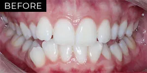
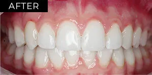
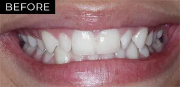
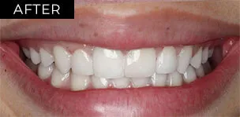

Damon braces
The Damon System is a revolutionary type of braces in modern orthodontics. This low-friction, low force system moves teeth in a more biologically sensitive way and, most importantly, it is faster.
A small gate, not an elastic ring
The difference starts with how each bracket holds the wire. Switch between them to see it.
Traditional braces
Elastic rings tie the wire to bigger, bulkier brackets.
Damon System
A small gate holds the wire in place, with no elastic ring pulling it tight.
Now in clear
The same smaller bracket, in a clear form.
Illustration, not to scale.
The main advantages of the Damon System
Smaller brackets, gentler forces and, on average, a shorter treatment.
-
Appearance
The brackets are a lot smaller than traditional, unsightly, bulky brackets. The best part is that they now come in a clear form.
-
Time
A study showed that, on average, the treatment time is 6 months shorter than with traditional braces.
6months shorter, on average
-
Minimum discomfort
Unlike traditional braces, which tie the wire to the brackets with elastic rings, the new brackets have small gates that hold the wire in place. This automatically reduces the forces applied to the teeth, and so reduces discomfort.
-
Wider smile
The Damon System is famous for creating wider arches, which means a wider smile. It also gives more support to upper lips that have flattened as a result of ageing.
Actual patient results
Two of our Damon System patients, before treatment and after their braces came off.




Patient images are published with consent and are intended for educational purposes only. Results vary between individuals, and all dental procedures carry risks.

A professional and friendly dental experience
For a professional and friendly dental experience, book an appointment today.
Other ways we straighten teeth
Not sure which suits you? We’ll talk you through the options at your appointment.
The information on this page is general in nature and is not a substitute for an examination. Any surgical or invasive procedure carries risks. Before proceeding, you should seek a second opinion from an appropriately qualified health practitioner.